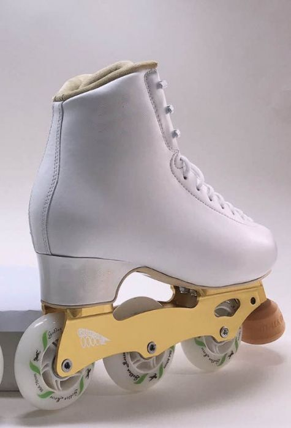

Kinds of Skates
Speed Skates

The speed skate is designed solely for speed! If you intend to make the skate a bit faster, the skate is created with less padding and also made from a lightweight material (plate); this feature allows its wheels to roll over a distance and also suitable to run over an intense session of training.
Jam Skates

Jam skates are created lightweight and have a low cut within the ankle region which permit enough room for motion. This ankle space allows you as a skater to exhibit fancy footwork; this is one of the significant features that set jam skating from other forms of skating.
Roller Derby Skates

Roller derby skate is used for intense sporting wheel activities; it goes beyond being an action-packed activity to providing perfect entertainment, though the process involved can most times be considered as rough on both skaters and the skates they use. You could say, it’s a fun roller skate type.
Artistic Skates

This roller skating is similar to figure skating or ice skating, so if you’ve seen any of these, then the artistic skating is not far-fetched. Artistic skates are created with the old fashion style of silhouette, which is basically what comes to your mind when you think of a roller skate.
Rythm Skates

When compared, this type of skate has a striking resemblance to an artistic skate, though both types of skates are used mainly for dancing. On the other hand, unlike the jam skate that is primarily inspired for break dancing, the rhythm skates are used for old school moves, which are also known as rhythm skates, shuffles skate, or the RandB skate.
Outdoor Skates

Outdoor skates and indoor skates are pretty similar, although they have a bit of difference, which is spotted out on the size and type of wheel used. Indoor skates are created to move on even, hard, and clean surfaces; as a result, they need wheels that are a bit hard to roll gently. And if you try to take the skate outside for a ride, the rough and uneven surface will make your entire cruise unenjoyable.